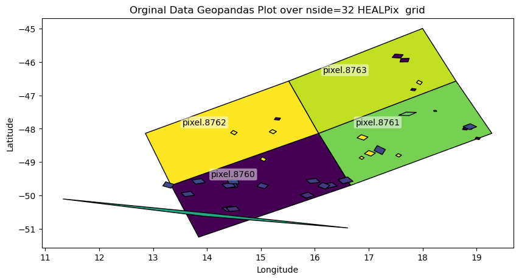

High-performance HEALPix data engineering for planetary and astronomical observations.
What is HEALPix?
HEALPix (Hierarchical Equal Area isoLatitude Pixelization) is a standard for partitioning a sphere (like a planet or the sky) into pixels of equal surface area.
Unlike traditional “rectangular” map projections (like Equirectangular or Mercator), HEALPix ensures that:
Every pixel is the same size: Statistical analysis remains valid across the entire globe, including the poles.
It is Hierarchical: You can easily increase or decrease resolution (\(NSIDE\)) while maintaining spatial relationships.
Fast Computation: Its structure allows for extremely efficient neighbor searches and spherical harmonic transforms.
pangeo-data/awesome-HEALPix: A curated list of awesome HEALPix libraries, tools, and resources.
The Problem: Data Distortion & Scale
In planetary science, data often arrives as scattered points, tracks, or footprints from spectrometers and altimeters. Traditionally, researchers face two major hurdles:
Projection Bias: Standard grids distort the poles, making global surface calculations (like mean chemical abundance or crater density) mathematically biased.
The Memory Wall: Modern missions generate billions of points. Loading an entire global high-resolution map into RAM to update it is often impossible.
healpyxel solves this by treating the sphere as a modern data engineering target rather than just a geometric grid.
Design Philosophy & Use Cases
healpyxel is built on the Unix Philosophy: do one thing and do it well, using a decoupled, chainable structure. It treats HEALPix indexing as a data-engineering problem rather than just a geometric one.
astropy also have a contributed module to handle those grids called astropy_healpix.
Who is this for?
This package is ideal for researchers and data engineers working with sparse, irregular, or streaming planetary and astronomical datasets.
Remote Sensing & Planetary Science: Specifically designed for instruments like 1-point spectrometers (e.g., MESSENGER/MASCS), laser altimeters, and push-broom spectrometers.
The “Sidecar” Workflow: Index your data without modifying the original source files. healpyxel creates lightweight “sidecar” files that map your GeoParquet rows to HEALPix cells.
Large-Scale Data Engineering: Process TB-scale datasets using a Split-Apply-Combine approach on GeoParquet.
Streaming & Incremental Ingestion: Update global maps as new data arrives without reprocessing the entire historical archive.
🛑 Who is this NOT for?
You might consider alternatives if your use case falls into these categories:
High-Resolution 2D Imagery: For dense image-to-HEALPix re-projection (e.g., CCD frames), tools like reproject or astropy-healpix are more suitable.
Standard Xarray/Dask Unstructured Grids: For deep integration with general unstructured meshes beyond HEALPix, use UXarray.
Multi-order Coverage (MOC) & LIGO workflows: For specific gravitational wave IO formats, check out mhealpy.
How it Works: The “Sidecar” Strategy
healpyxel implements a Split-Apply-Combine pattern tailored for spherical geometry:
Split (The Sidecar): Instead of rewriting your heavy raw data, healpyxel generates a small Parquet file containing only the index of the original data and its corresponding healpix_id.
Apply (Aggregation): Join this sidecar with any column in your original dataset to calculate statistics (Mean, Std Dev, Count) per cell.
Combine (The Map): Results are combined into a final HEALPix map or a streaming accumulator.
💡 Pro-Tip: For multiple pixels sensors (e.g. push-broom spectrometer), flatten your 2D acquisitions into a 1D tabular format (one row per spatial pixel) before saving to GeoParquet. healpyxel is optimized to ingest these “shredded” lines at high speed.
Installation
This works if you have a working requires C/C++ toolchain (cfitsio, HEALPix C++ library), I have no way to builts wheels for Windows, see below for workarounds.
pip install healpyxel
Optional Dependencies
# For geospatial operations (sidecar generation)pip install healpyxel[geospatial]# For streaming/incremental statistics (accumulator)pip install healpyxel[streaming]# For visualization (maps, plots)pip install healpyxel[viz]# Development tools (nbdev, testing, linting)pip install healpyxel[dev]# All optional dependenciespip install healpyxel[all]
Extras breakdown: - geospatial: geopandas, shapely, dask-geopandas, antimeridian (required for healpyxel_sidecar) - streaming: tdigest (percentile tracking in healpyxel_accumulator) - viz: matplotlib, scikit-image, skyproj (mapping workflows) - dev: All of the above + nbdev, pytest, black, ruff, mypy - all: Installs geospatial + streaming + viz (excludes dev tools)
Quick Start
The healpyxel workflow implements spatial aggregation using three core steps:
Split: Map observations to HEALPix cells healpyxel_sidecar
and 3. Apply+Combine: Aggregate values per HEALPix cell healpyxel_aggregate
Pipeline_End-to-End
1. Split: Map observations to HEALPix cells
You start with observation data (GeoParquet): geometries + values per record. A sidecar file links each observation (source_id) to HEALPix cells at your target resolution (nside).
Pre-compute HEALPix cell boundaries for faster repeated use (especially for high nside). This example create the 8,16 and 36 grid and convert the cached files to geoparquet that geopandas can directly read and visualize.
Those files link each row in the input parquet file to the HEALPix cells at the requested nside resolution; see Useful Healpix data for Moon Venus Mercury for some cells data. Refer to healpyxel_sidecar --help for full options. The --mode flag is especially important: - fuzzy: assign each input record to every cell it touches - strict: assign only records fully contained within a cell
input file contains columns A (you can check it with healpyxel_aggregate -i input --schema)
--agg mean median std
this produce un output the columns A_mean, A_median and A_std created appling those function on all input files rows listd in the sidecar file for a single HEALPix cell
healpyxel_aggregate\--input"test_data/samples/sample_50k.parquet"\--sidecar-dir"test_data/derived/cli_quickstart"\--sidecar-index all \--aggregate\--columns r1050 \--aggs mean median std mad robust_std \
This produces sparse output : only cells with actual values are written in ouput.
healpyxel_aggregate\--input"test_data/samples/sample_50k.parquet"\--sidecar-dir"test_data/derived/cli_quickstart"\--sidecar-index all \--aggregate\--columns r1050 \--aggs mean median std mad robust_std \--densify
This produces dense output : all HEALPix cells are writeen in ouput, empty one as filled with Nan.
Each cell is linked to some initial observation via the sidecar file, we can see here the distribution of one value in all the cell

We can visualize each pixel with one of the aggregator function output available in healpyxel_aggregate :
mean: Arithmetic mean
median: Median (50th percentile)
std: Standard deviation
min: Minimum value
max: Maximum value
mad: Median Absolute Deviation (robust to outliers)
robust_std: MAD × 1.4826 (equivalent to standard deviation for normal distributions, robust to outliers)
Each function generates one output column per input value column, named <column>_<agg> (e.g., r1050_mean, r1050_median, r1050_mad). Robust statistics (mad, robust_std) are recommended for outlier-prone datasets.
Python API
Minimal end-to-end python API example, each level works on previous one output.
initial data →
sidecar : generate data <> healpix grid connections →